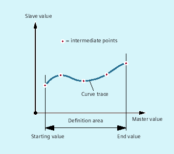

A curve table represents a part program or a section of a part program enclosed by CTABDEF at the start and CTABEND at the end.
Within this part program section, unique following axis positions are assigned to individual positions of the leading axis using motion operations; these following axis positions are used as intermediate points when calculating the curve definition in the form of a polynomial up to the 5th order.
The MD must be configured accordingly to ensure that sufficient memory space is reserved for the definition of curve tables (→ machine manufacturer).
| Start of curve table definition | ||
| End of curve table definition | ||
| Axis whose motion is to be calculated using the curve table | ||
| Axis providing the master values for the calculation of the following axis motion | ||
| Number (ID) of curve table The number of a curve table is unique and independent of the memory location. It is not possible for there to be tables with the same number in the static and dynamic NC memory. | ||
| Table periodicity | ||
| Table is non-periodic (table is processed only once, even for rotary axes) | ||
| Table is periodic with regard to the leading axis | ||
| Table is periodic with regard to leading axis and following axis | ||
| Specification of memory location (optional) | ||
| The curve table is created in the static NC memory. | ||
| The curve table is created in the dynamic NC memory. | ||
Note: | |||
| Note |
OverwriteA curve table is overwritten as soon as its number ( |
A program section is to be used unchanged for defining a curve table. The STOPRE command for preprocessing stop can remain and is reactivated immediately as soon as the program section is no longer being used for table definition and CTABDEF and CTABEND have been removed.
| Program code | Comment |
|---|---|
| … | |
| CTABDEF(Y,X,1,1) | ; Definition of a curve table. |
| … | |
| IF NOT ($P_CTABDEF) | |
| STOPRE | |
| ENDIF | |
| … | |
| CTABEND |
| Program code | Comment |
|---|---|
| N100 CTABDEF(Y,X,3,0) | ; Beginning of the definition of a ;non-periodic curve table with number 3. |
| N110 X0 Y0 | ; 1st motion operation, defines the starting values and 1st intermediate point:Master value: 0, Following value: 0 |
| N120 X20 Y0 | ; 2nd interpolation point:Master value: 0…20, Following value: starting value…0 |
| N130 X100 Y6 | ; 3rd interpolation point:Master value: 20…100, Following value: 0…6 |
| N140 X150 Y6 | ; 4th interpolation point:Master value: 100…150, Following value: 6…6 |
| N150 X180 Y0 | ; 5th interpolation point:Master value: 150…180, Following value: 6…0 |
| N200 CTABEND | ; End of the definition. The curve table is generated in its internal representation as a polynomial of up to the 5th order. The calculation of the curve definition with the specified intermediate points is dependent on the modally selected interpolation type (circular, linear, spline interpolation). The part program state before starting the definition is restored. |
Definition of a periodic curve table with number 2, master value range 0 to 360, following axis motion from 0 to 45 and back to 0:
| Program code | Comment |
|---|---|
| N10 DEF REAL DEPPOS | |
| N20 DEF REAL GRADIENT | |
| N30 CTABDEF(Y,X,2,1) | ; Start of definition. |
| N40 G1 X=0 Y=0 | |
| N50 POLY | |
| N60 PO[X]=(45.0) | |
| N70 PO[X]=(90.0) PO[Y]=(45.0,135.0,-90) | |
| N80 PO[X]=(270.0) | |
| N90 PO[X]=(315.0) PO[Y]=(0.0,-135.0,90) | |
| N100 PO[X]=(360.0) | |
| N110 CTABEND | ; End of the definition. |
| ;Test of the curve by coupling Y to X: | |
| N120 G1 F1000 X0 | |
| N130 LEADON(Y,X,2) | |
| N140 X360 | |
| N150 X0 | |
| N160 LEADOF(Y,X) | |
| N170 DEPPOS=CTAB(75.0,2,GRADIENT) | ; Read the table function for master value 75.0. |
| N180 G0 X75 Y=DEPPOS | ; Positioning leading and following axes. |
| ;After activating the coupling, no synchronization of the following axis is required. | |
| N190 LEADON(Y,X,2) | |
| N200 G1 X110 F1000 | |
| N210 LEADOF(Y,X) | |
| N220 M30 | |
See also:
Define curve tables (CTABDEF, CATBEND): Further information
Curve tables: Function and application